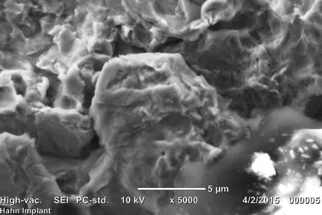

نسخه استخراجشده؛ ترجمه یا تأیید علمی انجام نشده است. وضعیت: captured
تیتانیوم تجاری خالص طولانیترین سابقهی استفاده در ایمپلنت را دارد و سازگاری زیستیاش با استخوان و بافت نرم کاملاً تثبیت شده است. گریدهای ۱ تا ۴ تیتانیوم خالصاند و از گرید ۵ به بالا آلیاژ. رایجترین آلیاژ همان گرید ۵ است: ۶ درصد آلومینیوم و ۴ درصد وانادیوم.
تفاوت استحکامها معنادار است: گرید ۴ بیش از دو برابر گرید ۱ استحکام دارد، و گرید ۵ بیش از ۶۰ درصد از گرید ۴ قویتر است. گرید ۲۳ نسخهی خالصتر گرید ۵ با رفتار خستگی بهتر است.
و راز اصلی: بهمحض تماس با هوا، روی سطح تیتانیوم لایهی اکسید تیتانیوم تشکیل میشود — لایهای غیرفعال که در محیط دهان مقاومت خوبی به خوردگی دارد و اگر مکانیکی برداشته شود، بیدرنگ خودش را میسازد. آنچه با استخوان تماس دارد، در واقع همین اکسید است نه فلز. ولی بازسازی اکسید به معنای تمیز شدن سطح نیست: پیش از درج، سطح را با دستکش، بزاق یا ابزار تماس نده و هرگز تراشش نده؛ آلودگی و آسیب توپوگرافی با اکسید برنمیگردند.
سطح صاف ماشینکاریشده جای خود را به سطوح زبر داده است، ولی «هرچه زبرتر بهتر» درست نیست. سطوح متوسطاً زبر با شاخص Sa در محدودهی ۱ تا ۲ میکرومتر بهترین شرایط را برای استئواینتگریشن فراهم میکنند.
روشهای ایجاد زبری متفاوتاند: سندبلاست و اسیدچینگ، آنودایز، و RBM که با ذرات هیدروکسیآپاتیت انجام میشود — مزیتش این است که برخلاف گریتبلاست، هر ذرهای که روی سطح بماند قابل جذب است.
زیرکونیا از جهات زیستی، زیبایی و نوری بر تیتانیوم مزیت دارد و تمایل کمتری به جذب پلاک نشان میدهد — بهویژه برای بایوتایپ نازک و ناحیهی قدامی جذاب است. اما تاریخچهاش با نرخ بالای شکست گره خورده و نسلهای جدیدترش با بهبود چقرمگی شکست ساخته شدهاند.
